45-second walkthrough · also at video/openwhisper-demo.mp4
How to try it
- Download OpenWhisper-Setup from openwhisper.fiorilabs.tech.
- Run the installer. If Windows warns you, click More info → Run anyway.
- Press
*on the numpad to dictate, or open Meeting Mode for a call.
Full notes: HOW_TO.md
Pictures
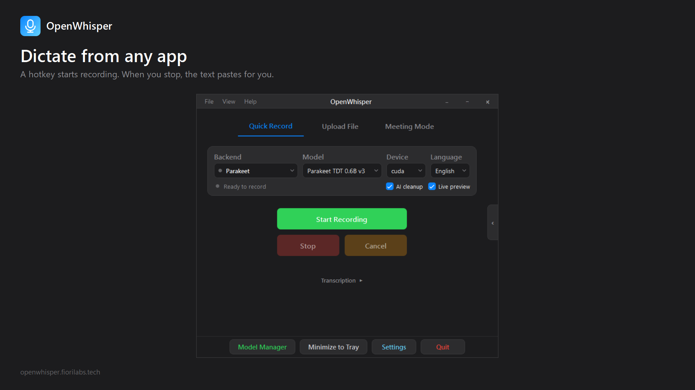
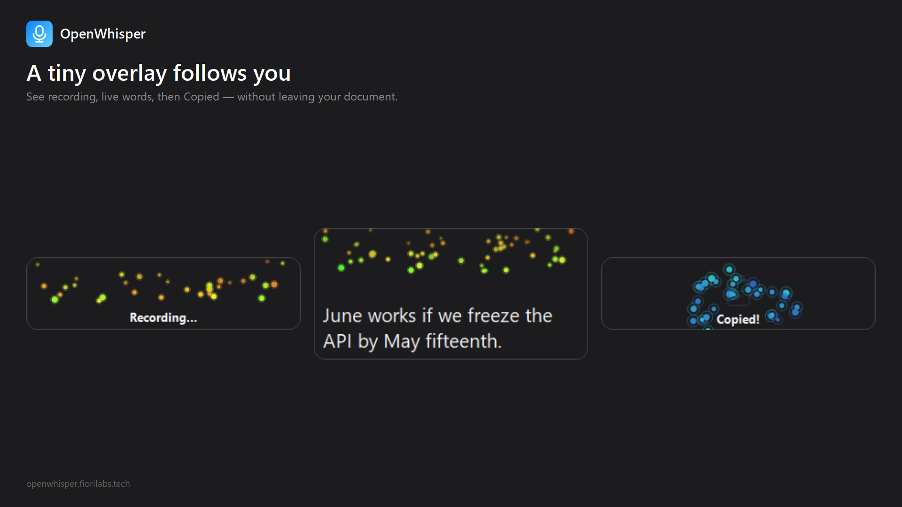
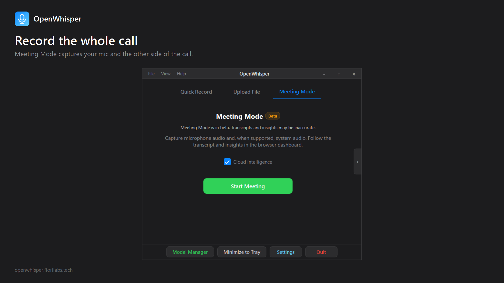
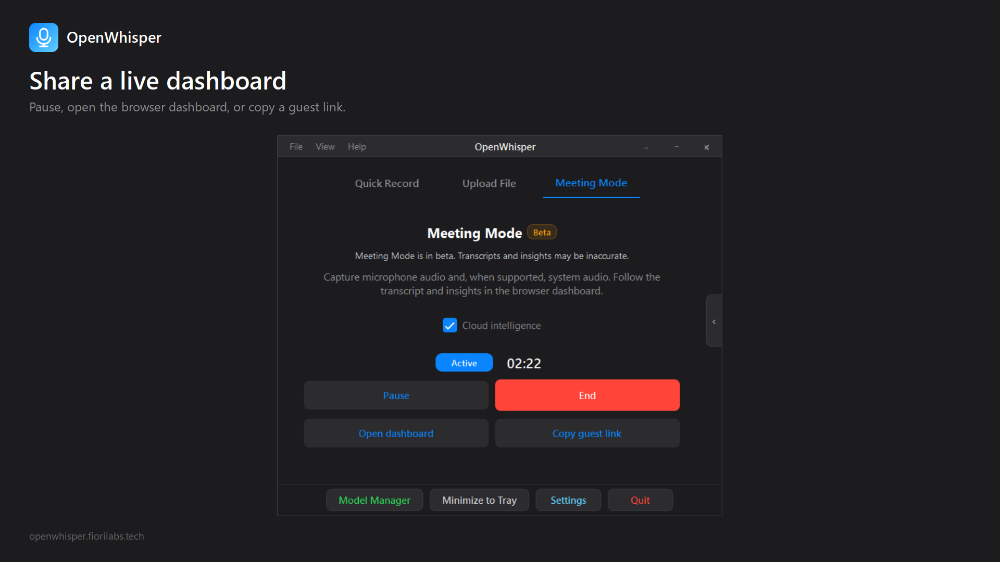
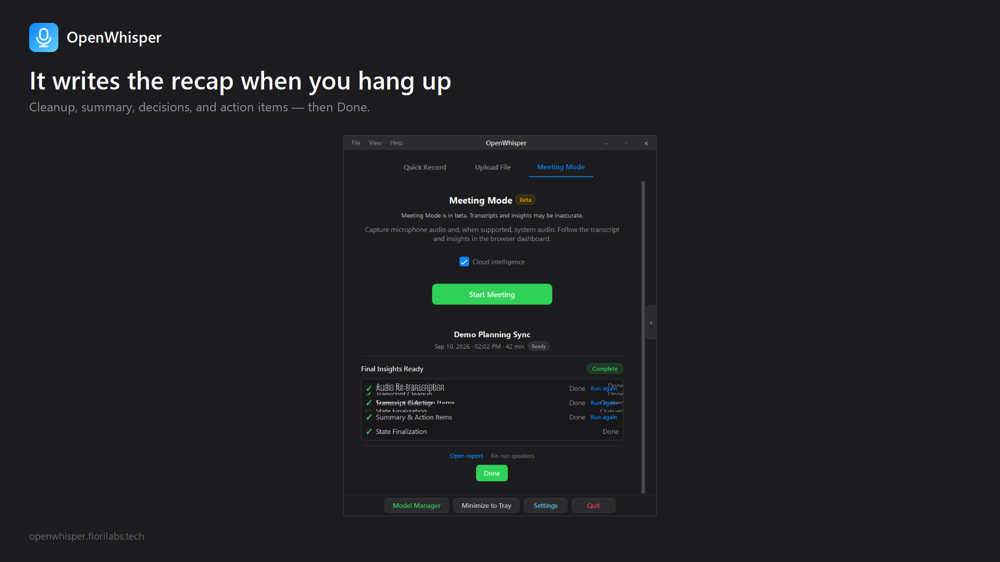
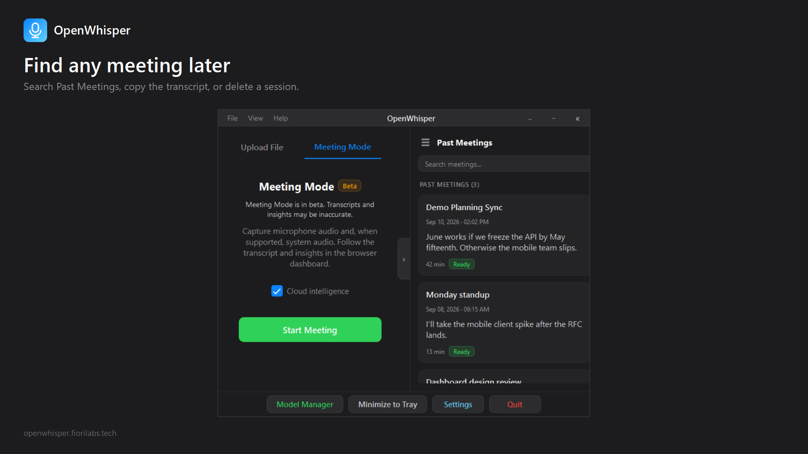
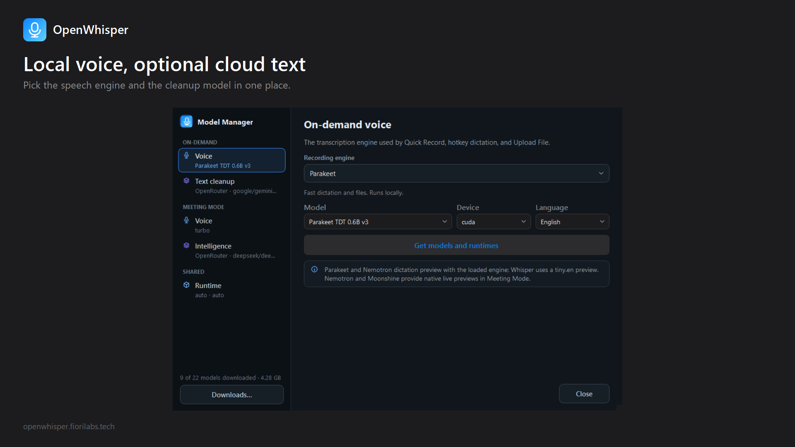
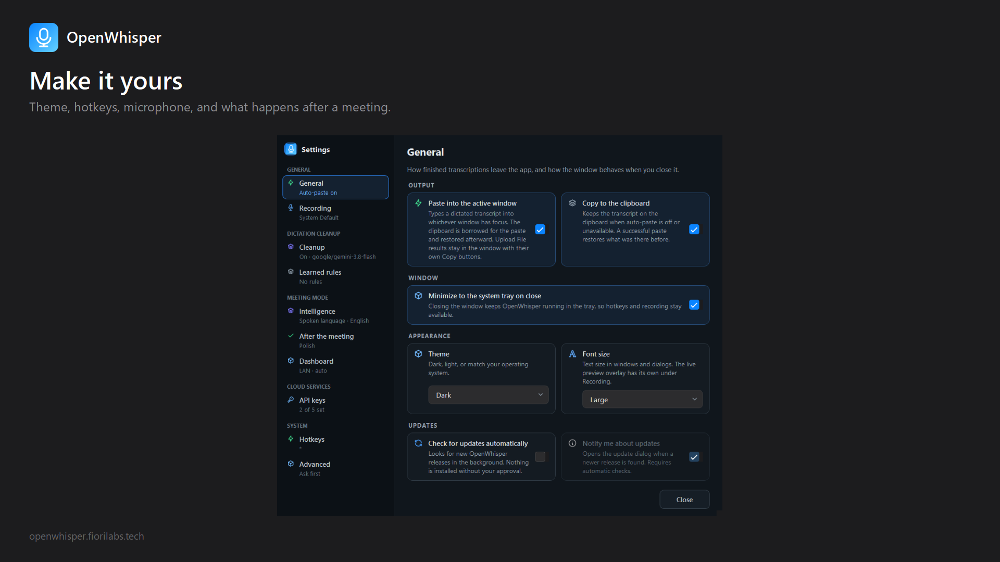
Raw UI shots
Straight window captures if someone wants the chrome, not the framed cards.
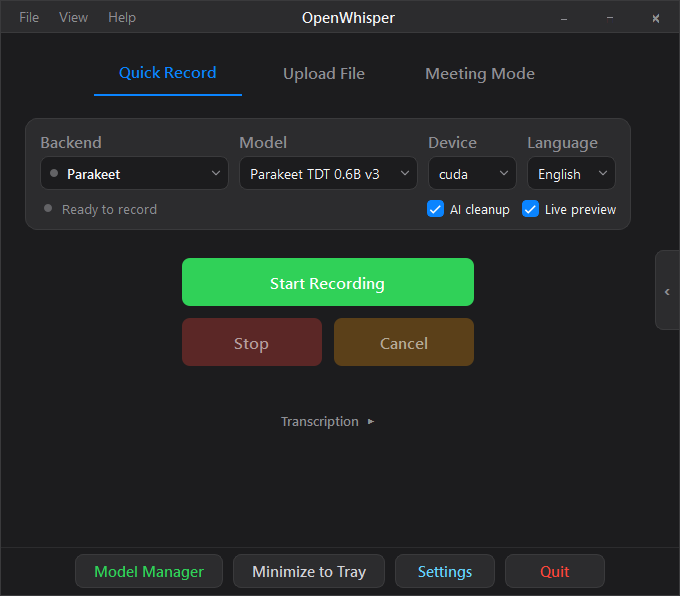
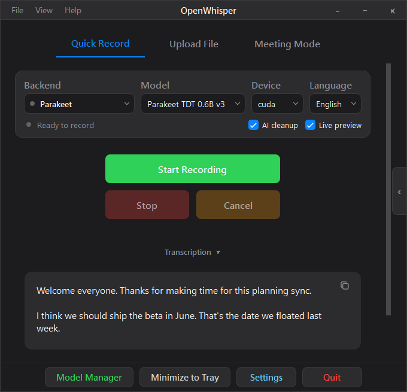
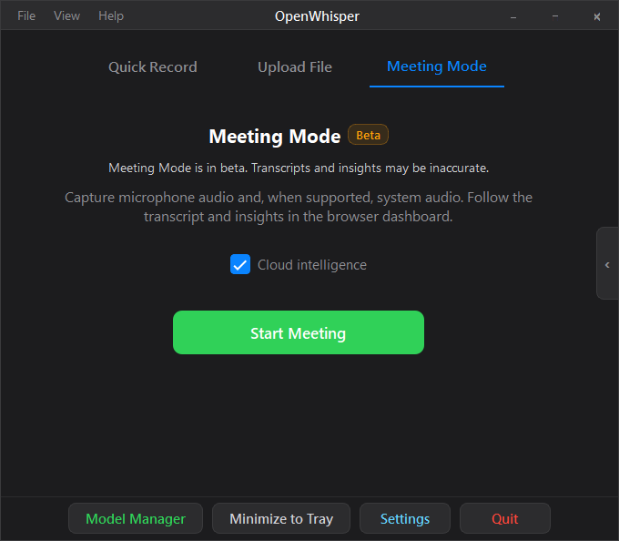
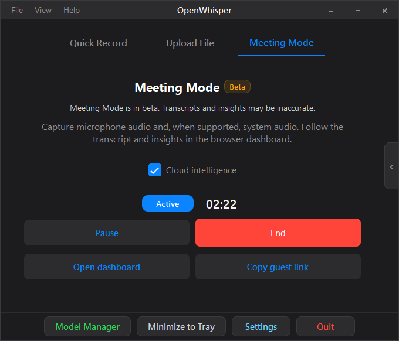
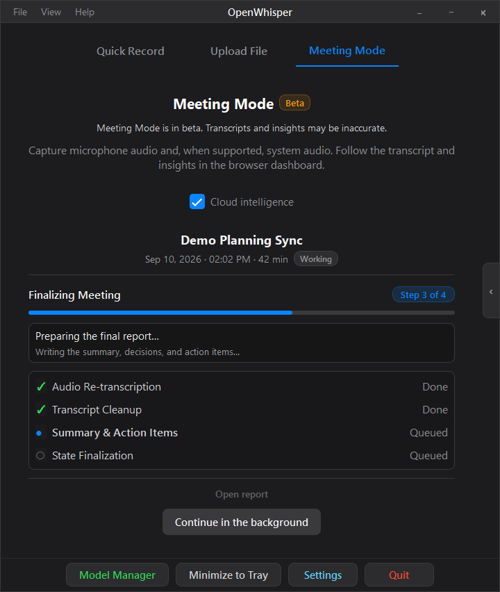
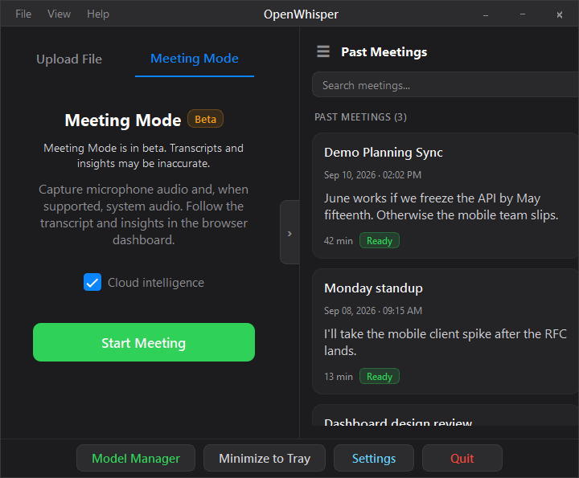
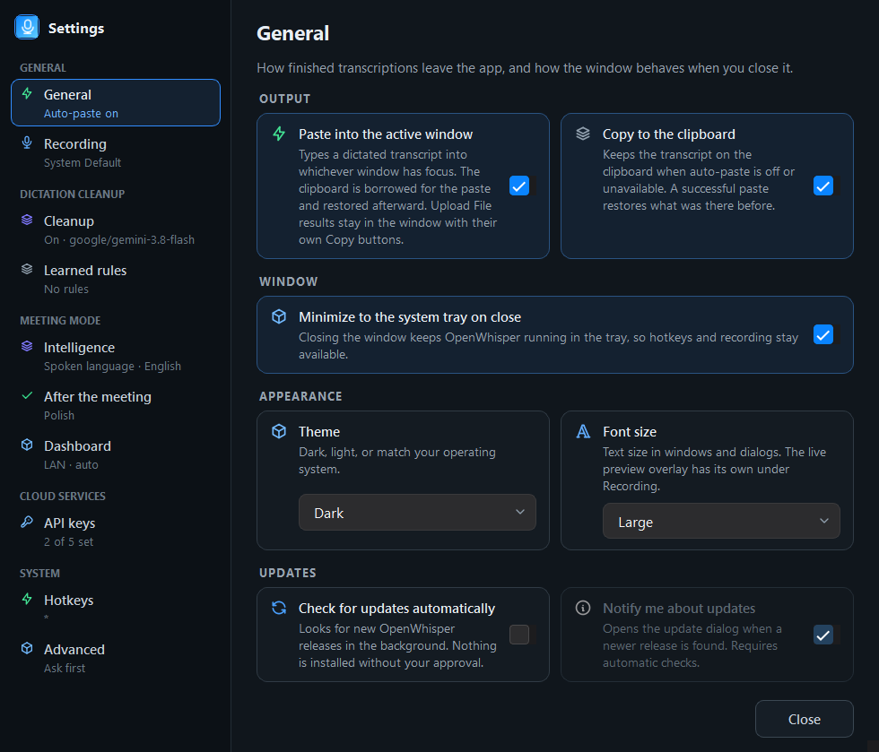
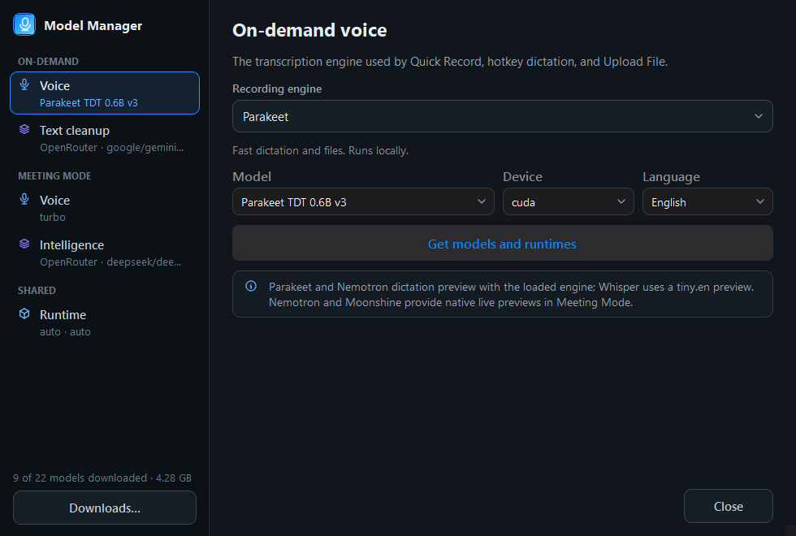
Usual setup
| Want | Where |
|---|---|
| Theme and type size | Settings → General |
| Microphone | Settings → Recording |
| Dictate hotkey | Settings → Hotkeys (default *) |
| Speech / cleanup models | Model Manager |
| API keys | Settings → API keys |
| After-meeting recap | Settings → After the meeting |